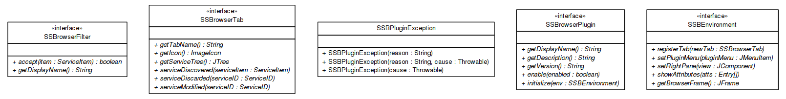

JavaScript is disabled on your browser.
Sorcer 1.0 API Documentation

Skip navigation links
Overview
Package
Class
Use
Tree
Deprecated
Index
Help
Prev Package
Next Package
Frames
No Frames
All Classes
Package sorcer.ssb.browser.api
Interface Summary
Interface
Description
SSBEnvironment
SSBrowserFilter
SSBrowserPlugin
SSBrowserTab
Exception Summary
Exception
Description
SSBPluginException
Skip navigation links
Overview
Package
Class
Use
Tree
Deprecated
Index
Help
Copyright ©
Sorcersoft.com S.A.
.
Prev Package
Next Package
Frames
No Frames
All Classes
Copyright © 2013-2014
Sorcersoft.com S.A.
. All Rights Reserved.